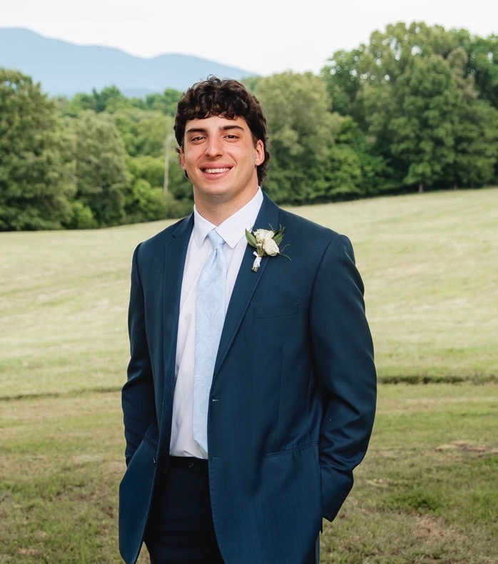

≈500 Wh
Battery Energy
Target usable energy capacity using a lithium iron phosphate (LiFePO₄) battery.
AUBURN UNIVERSITY • SENIOR DESIGN
A portable battery power station that uses sunlight to store energy and provide backup electricity when you need it.
Explore the Project ↓
When a storm knocks out the power, people may lose electricity for lights, phones, and other important devices. Our team is designing a portable power station that collects energy from sunlight, stores it in a battery, and makes that energy available when regular electricity is unavailable.
The team is developing a portable power station designed to balance energy capacity, output power, renewable charging, and practical operating time.
≈500 Wh
Target usable energy capacity using a lithium iron phosphate (LiFePO₄) battery.
≈300 W
Target continuous AC power for compatible equipment and emergency loads.
150–200 W
Target solar input capability to recharge the battery using renewable energy.
≈4 Hours
Preliminary runtime target at a 100 W average load, subject to system efficiency and operating conditions.
Solar panels collect energy from sunlight and turn it into electricity that can be used to recharge the battery.
The battery stores the electricity collected from the solar panels so the power station can provide electricity at night or when sunlight isn't available.
The inverter changes the battery's electricity into the type of electricity used by regular household outlets, allowing the power station to run compatible devices.
USB ports let you charge phones, tablets, and other small electronic devices directly from the power station.
MPPT stands for Maximum Power Point Tracking. It helps the solar charger adjust to changing sunlight so it can collect as much available energy as possible to recharge the battery.
The battery management system monitors the battery's condition and helps protect it from problems such as overheating, excessive current, or unsafe charging and discharging.
Design the power station so one person can carry it easily during an emergency or outdoor trip.
Choose a battery that can power devices for as long as possible without making the power station too heavy or expensive.
Choose affordable components and keep the total prototype cost within our preliminary budget target of about $600.
Manage heat generated by the power electronics and charging system.
Keep the battery and electrical components from getting too hot while the power station is charging or powering devices.
Design a sturdy case that holds and protects all the parts inside the power station. Make sure it is easy to carry and allows heat to escape so the electrical components can operate safely.
Explore ways for users to check the battery level and power usage on their phones. This is an extra feature we will consider after the main power station is working reliably.
Potential applications include emergency preparedness, storm-related outages, camping, and other situations where dependable portable electricity is valuable.
Building our power station takes more than picking parts and putting them together. Our team has been researching how the system should work, deciding which parts we need to design ourselves, and planning how everything will fit together. Here is a look at our progress so far.
One challenge is figuring out how to build a solar charger that adjusts to sunlight and safely sends electricity to the battery. Our team needs to choose the right electronic parts and determine how to measure the electricity moving through the system.
Another challenge is making sure the solar charger, battery, small control computer, sensors, and display all work together correctly. We also need to make sure the parts are available and the design stays within our time and budget.
Retrospective summary of submitted weekly status reports. The next steps above reflect the Week 5 plan and are not presented as completed work.
This chart shows when we plan to complete each part of our project, from choosing components to building and testing the power station. We have included extra time for exams, delays, and problems we may need to solve along the way.
Fall 2026 – Spring 2027 · Auburn University ECE Capstone · Team 13
This chart represents the planned project schedule. Task progress and milestone dates should be updated to reflect actual progress and any approved schedule changes.
Building a power station involves many different jobs. We have divided the project into seven areas so our team can work on different parts, keep track of what needs to be done, and bring everything together into one working system.
Design and test the electronics that collect power from the solar panels and adjust it for charging the battery. Use computer simulations to help understand how the design should work before building the actual circuit.
Choose and test the battery that stores energy for the power station. Make sure the system can monitor the battery's condition and help protect it from unsafe charging, discharging, or excessive heat.
Develop the small computer system that monitors the power station. It will collect information from sensors, track how the system is performing, and help control how the different parts work together.
Investigate enclosure design, component placement, portability, electrical isolation, cooling, airflow, and thermal performance.
Combine the electrical, battery, embedded, output, and mechanical subsystems into one integrated prototype.
Verify subsystem operation, calibrate measurements, and evaluate efficiency, runtime, thermal behavior, and protection.
Maintain schedules, procurement records, design documentation, test results, risk tracking, reports, and team coordination.
Preliminary work breakdown structure based on the capstone proposal. Work-package status will be updated as the project progresses.
Our capstone instructors facilitate the engineering design process, while subject matter experts provide technical insight to help our team evaluate design approaches, resolve challenges, and develop our portable solar emergency power station.
ELEC 4010 Capstone Design
geigedl@auburn.edu Broun Hall 227
Facilitates the capstone design course and helps teams establish project scope, define engineering requirements, and follow a structured design process throughout the academic year.
Provides course guidance and helps the team align its engineering work with capstone design expectations.
ELEC 4010 Capstone Design
bz10098@auburn.edu Broun Hall 221
Serves as an instructor and facilitator for the capstone course, supporting student teams as they develop and manage their senior engineering design projects.
Helps facilitate the capstone process as the team progresses through project planning, design development, and evaluation.
Power Electronics & Renewable Energy
Discussed MPPT converter development and the hill-climbing control method. Recommended PSCAD modeling to evaluate the proposed power system before hardware implementation.
Identified simulation, control-algorithm research, and reference-design review as important steps in developing the team's solar-charging subsystem.
Embedded Systems & Communications
Discussed microcontroller selection, system measurements, inputs and outputs, memory, peripheral capabilities, and communication interfaces including I²C, SPI, and CAN.
Helped the team identify embedded-system requirements and the information that must be exchanged between subsystems.
Enclosure & Thermal Design
Met with the team and donated a Grape Solar Zenith MPPT charge controller. The controller will serve as a physical reference for examining commercial power electronics, sensing, protection, and control.
Provides reference hardware that the team can examine and compare against its own MPPT converter design. The commercial controller is a learning resource, not a replacement for the team's custom-design work.
Faculty roles, expert consultations, and equipment contributions are presented separately to distinguish course facilitation from technical consultation.
Testing will begin at the individual circuit and subsystem levels before progressing to the fully integrated power station. Each stage will evaluate performance, reliability, and safe operation against the team's established design requirements.
Evaluate the team-designed solar-charging converter and its control algorithm under different simulated or actual solar input conditions.
Check whether the embedded controller can accurately collect, process, and display information from the power station's sensors.
Evaluate battery behavior and confirm that the power station can deliver useful electrical power through its planned outputs.
Test the integrated prototype under representative operating conditions to evaluate performance over time.
After the individual subsystems have been evaluated, the team will test the integrated power station to verify solar charging, battery operation, AC and USB outputs, monitoring, protection, runtime, and thermal performance as a complete system.
Test procedures, expected values, measured results, and any corrective design changes will be documented as verification progresses.
Testing roadmap based on the project proposal. The tests listed above describe planned verification activities; results and completion status will be added as testing is performed.
A multidisciplinary team of Auburn University engineering seniors.
Computer Engineering • Team Lead
From Opelika, Alabama! Beth's favorite class taken at Auburn is Signals and Systems. Plans following graduation include working for a power company either in design or technology! In her free time, Beth enjoys cooking and baking!
Electrical Engineering • Team Member
From Haverford, Pennsylvania! Cole's favorite class taken at Auburn is Electric Power Engineering. Plans following graduation include pursuing a career in power engineering, focusing on either power transmission or generation. In his free time, Cole enjoys running, weight lifting, and supporting his favorite sports teams!

Electrical Engineering • Team Member
From Dalton, Georgia! Ike's favorite class taken at Auburn is Electric Power Engineering. After graduation he plans to go into the design-build field for electical and control systems. In his free time, Ike enjoys hunting and fishing!.
Electrical Engineering • Team Member
From Edwardsville, Illinois! Averie's favorite class taken at Auburn is Analog Electronics. Plans following graduation include working at a teleacommunications company focusinging on utilizing her wireless engineering specialization. In her free time, Averie enjoys read, watch movies, and spend time with friends.
Electrical Engineering • Team Member
From Anniston, Alabama! Macy's favorite class taken at Auburn is Digital Logic Circuits. Plans following graduation include starting her full time role at NextEra Energy for their graduate rotational program. In her free time, Macy enjoys traveling, hiking, and crafting!
Electrical Engineering • Team Member
From Plano, Texas! Blake's favorite class taken at Auburn is Analog Electronics. Plans following graduation include starting his career in the power industry. In his free time, Blake enjoys going to the gym and playing football with friends!